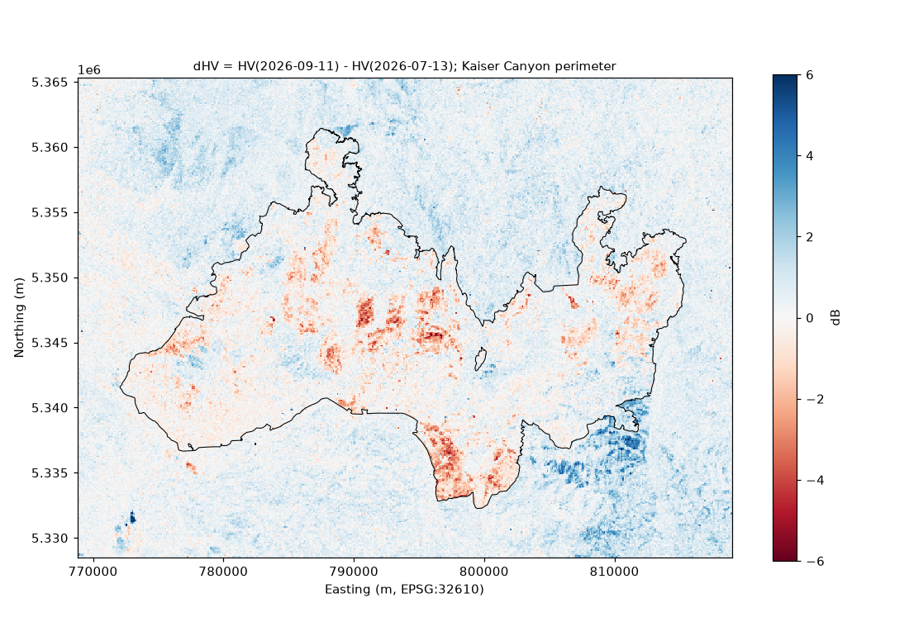
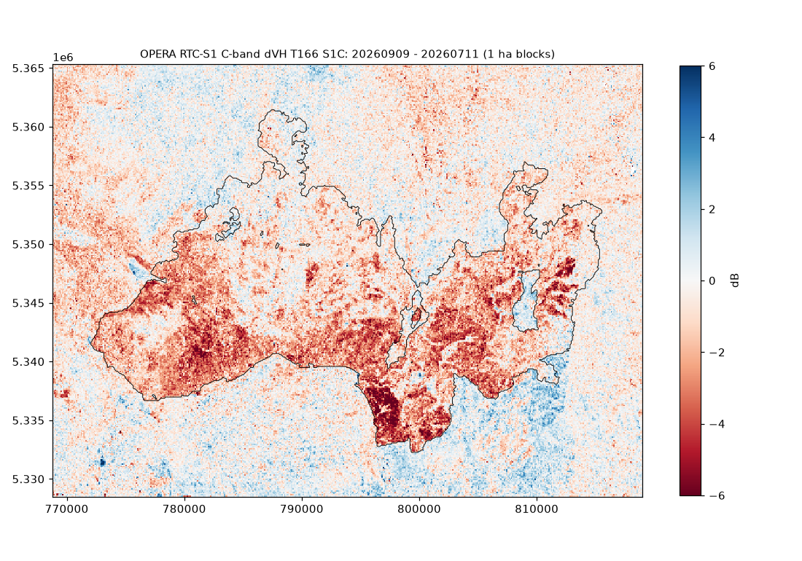

REAL DATA · processed today, not a mockup
Kaiser Canyon Fire: what each radar actually saw
Change in cross-polarized radar return, mid-July (before the fire) to mid-September (after), averaged over 1-hectare blocks. Red means the echo dropped. The black line is the official NIFC fire perimeter (138,285 acres).
NISAR · L-band (24 cm) · HV
Jul 13 → Sep 11, 2026 · track 71 descending · GCOV PROVISIONAL, same mode and processing version on both dates

4.7%of 1-ha blocks inside the fire dropped by 2 dB or more
(0.05% outside: very few false alarms)
Sentinel-1 · C-band (5.6 cm) · VH
Jul 11 → Sep 9, 2026 · track 166 · OPERA RTC-S1, put on the same 1-ha grid

40.6%of 1-ha blocks inside the fire dropped by 2 dB or more
(5.2% outside)
What this tells us
- Here, Sentinel-1 sees about 9× more of the burn. Kaiser Canyon burned mostly shrub-steppe and grass. C-band's short waves bounce off low vegetation, so losing it shows up strongly.
- NISAR's drops are smaller and patchier, but sharp: −3 to −5 dB in the forested pockets. Where there were trees, 6.2% of blocks dropped; in open ground, 2.1%. L-band's long waves mostly pass through grass and react to branches and trunks.
- The two maps agree only loosely (r ≈ 0.4 block by block). They're measuring different things, which is the whole point of comparing them.
- A data-cleaning lesson: unburned land outside the fire brightened by about +0.5 dB (moisture or calibration). The app must measure change relative to the surroundings, not raw.
What changes in the plan
- The headline can't claim NISAR always sees more. The honest pitch: "two radars, one map: which one sees what, and why."
- Kaiser Canyon becomes the honest counter-example. The app already has an "only Sentinel-1 saw it" color for exactly this.
- Now testing where L-band should win: flooding under the forest canopy from Tropical Storm Edouard (TX), and clearcuts in Washington timberland.
- Washington's December 2025 floods exist only in uncalibrated BETA data, so they're out.
Back to the app mockup
Granules: NISAR_L2_PR_GCOV_025_071_D_064_4005_DHDH_A_20260713T030956… and …_030_071_D_064_4005_DHDH_A_20260911T030953…, CRID P05023. Sentinel-1: OPERA RTC-S1, track 166 (S1C). Perimeter: WFIGS 2026-WACOA-260140. Images are on the native UTM 10N grid, not yet reprojected for the map.